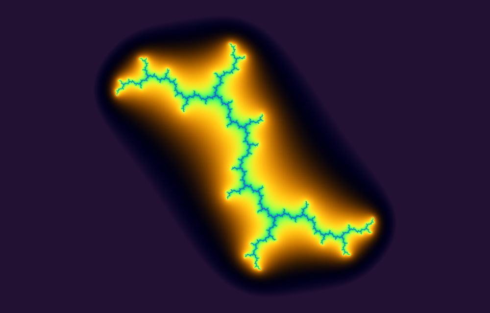
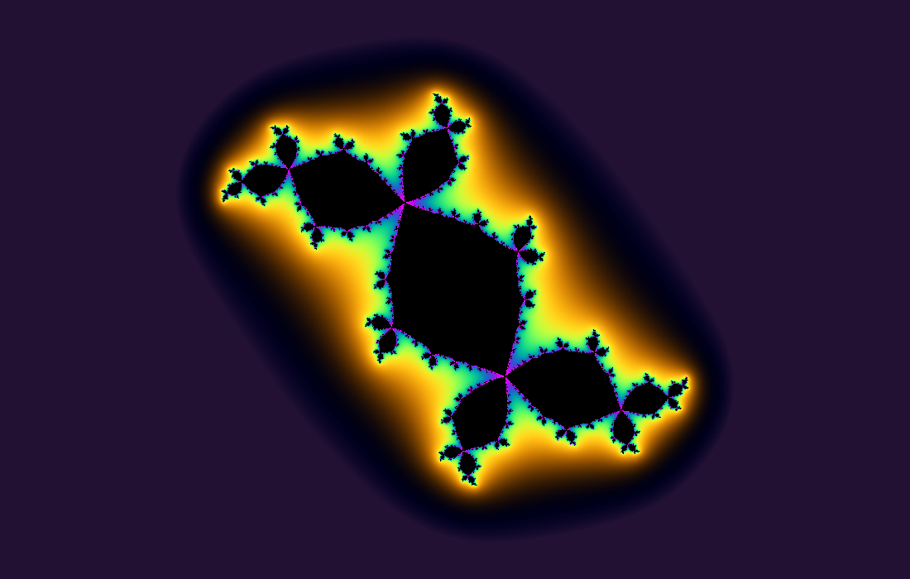
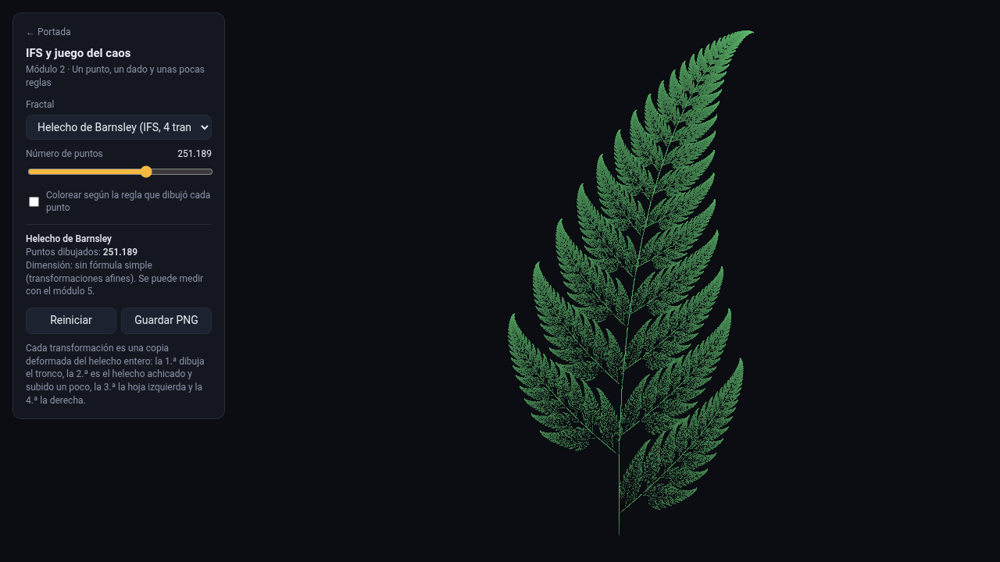
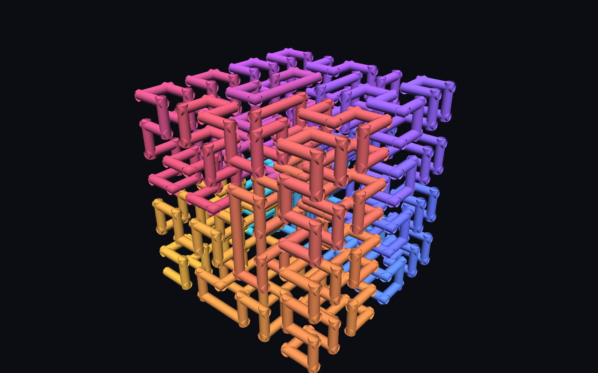
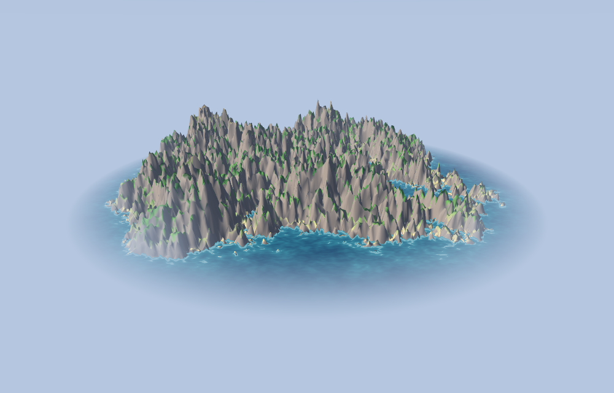
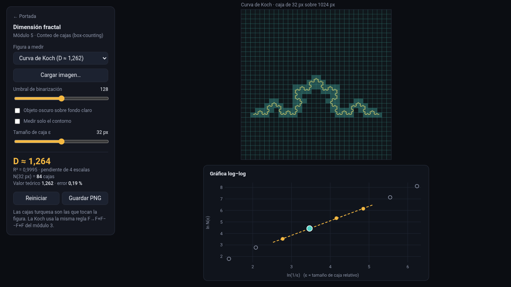

Computación Visual · 8.º ciclo · Grupo 8
Geometría fractal:
algoritmos y aplicación gráfica interactiva
Universidad Nacional Mayor de San Marcos · Ingeniería de Sistemas
Exposición: 02/12/2026
Qué vamos a ver
- ¿Qué es un fractal? y por qué importa en computación visual
- 5 algoritmos, cada uno con su demostración en la app
- Un hilo conductor: la curva de Koch recorre tres módulos
- Demo en vivo con participación del público
- Conclusiones y preguntas
¿Qué es un fractal?
AutosimilitudUna parte se parece al todo, a distintas escalas.
Dimensión fraccionariaUna curva muy irregular ocupa más que una línea, pero menos que un plano.
Reglas simplesUna fórmula corta produce estructuras de enorme complejidad.
Costas, nubes, montañas y ramas no son círculos ni cuadrados. La geometría fractal les da un lenguaje matemático (Mandelbrot, 1967).
Cinco técnicas, una aplicación
| # | Módulo | Idea en una frase |
|---|
| 1 | Conjuntos de escape | Iterar z² + c y ver quién escapa |
| 2 | IFS y juego del caos | Saltos al azar que dibujan el atractor |
| 3 | L-systems | Reescribir texto y dibujarlo con una tortuga |
| 4 | Terreno fractal | Subdividir y desplazar para crear montañas |
| 5 | Dimensión fractal | Contar cajas para medir la rugosidad |
Módulo 1 · Conjuntos de escape
Mandelbrot y Julia en la GPU
- Fórmula:
z → z² + c
- Si |z| supera 2, el punto escapa; si no, es parte del conjunto
- Cada píxel se calcula en paralelo (WebGL): ≈ 40× más rápido que en la CPU a 1080p
- Límite: precisión de 32 bits al hacer zoom

Pachas Auris, Pieers Fernando
Pruébalo
en la app
Módulo 1 · Un parámetro lo cambia todo
Julia: un cambio pequeño de c

c = −0,8 + 0,156i · «Dragón»

c = i · «Dendrita»

c = −0,123 + 0,745i · «Conejo»
Misma fórmula z → z² + c; solo cambia c y la forma es otra.
Módulo 1 · Aprender cómo se forma
De cero al conjunto, capa por capa

Construir desde cero: iteración 12

Órbita de un punto que escapa
Sin iteraciones todo es negro. Cada iteración añade una capa; el punto escapa cuando su órbita sale de |z| = 2.
Módulo 2 · IFS y juego del caos
IFS y juego del caos
- Transformaciones afines que contraen el plano
- Se elige una al azar, se aplica y se dibuja el punto
- Triángulo de Sierpinski: D = ln 3 / ln 2 ≈ 1,585
- Helecho de Barnsley con 4 transformaciones
- Si la razón de contracción r pasa de 1/2, las copias se solapan

Cerna Aguilar, Emily Andrea
Pruébalo
en la app
Módulo 3 · L-systems
Reglas de texto que crecen como plantas
- Axioma + reglas que reescriben todos los símbolos a la vez
- Una tortuga lee la cadena:
F avanza, + − giran, [ ] ramifican
- En 3D,
& ^ \ / inclinan y rotan la rama (WebGL)
- Reglas estocásticas: mismas reglas, árboles distintos

Flores Cortez, Valeria Alexandra
Pruébalo
en la app
Módulo 3 · Cómo lo lee la tortuga
De la cadena al dibujo, símbolo por símbolo

Paso a paso: [ guarda la posición en una pila y ] vuelve a ella

Curva de Hilbert 3D: una sola curva por los 512 puntos del cubo
La cadena crece exponencialmente: la planta pasa de 4 096 a 32 768 segmentos en una sola generación.
Módulo 4 · Terreno fractal
Montañas con diamond-square
- Se subdivide la malla desde las 4 esquinas
- Cada paso suma un desplazamiento cada vez menor
- La rugosidad controla qué tan áspero es el relieve
- Misma semilla, mismo terreno; se dibuja en WebGL

Sihuacollo Sierra, Keyla Noemi
Pruébalo
en la app
Módulo 4 · Un parámetro lo cambia todo
Rugosidad: de liso a áspero

r = 0,40 · D = 2
r = 0,59 · D ≈ 2,24

r = 0,80 · D ≈ 2,68
Misma semilla, solo cambia r. A mayor rugosidad, mayor dimensión fractal de la superficie.
Módulo 5 · Dimensión fractal
Medir un fractal: box-counting
- Cubrir la imagen con cajas de lado ε y contar las ocupadas, N(ε)
- La pendiente de log N(ε) frente a log(1/ε) estima la dimensión D
- Validación: Koch 1,264 (teórica 1,262) y Sierpinski 1,535 (teórica 1,585)

Puente Carmen, Rodrigo Joaquin
Pruébalo
en la app
El hilo conductor: la curva de Koch
Módulo 3La curva se genera con un L-system.
→
Módulo 5La misma regla dibuja la curva y se mide con box-counting.
→
ResultadoTeórica ln 4 / ln 3 ≈ 1,262. La app mide 1,264: error de 0,2 %.
Así comprobamos que el cálculo es correcto y que los módulos forman un conjunto, no cinco demos sueltas.
Demostración en vivo
- Alguien del público elige el punto de zoom en Mandelbrot
- Otra persona elige la semilla del terreno
- Generamos Koch y medimos su dimensión
Plan B: video de 2–3 minutos con el recorrido por los cinco módulos.
Abre la app
desde tu celular
Fortalezas y debilidades
| Técnica | Fortaleza | Debilidad |
|---|
| Conjuntos de escape | Paralelismo en GPU | Precisión numérica al ampliar |
| IFS y juego del caos | Compacto, base matemática sólida | Convergencia aleatoria |
| L-systems | Modela bien la ramificación | Crecimiento exponencial |
| Terreno fractal | Paisajes con pocos parámetros | Poco realismo geológico |
| Box-counting | Mide imágenes reales | Depende de la binarización |
Conclusiones
- Reglas simples generan complejidad: una fórmula, un puñado de transformaciones o unas reglas de texto bastan
- Cada técnica tiene su perfil propio de fortalezas y límites
- Una aplicación web interactiva hace visible lo que la fórmula solo describe
- La dimensión fractal conecta la teoría con imágenes reales
Referencias principales
Barnsley, M. F., & Demko, S. (1985). Iterated function systems and the global construction of fractals. Proceedings of the Royal Society of London. A, 399(1817), 243–275. https://doi.org/10.1098/rspa.1985.0057
Fournier, A., Fussell, D., & Carpenter, L. (1982). Computer rendering of stochastic models. Communications of the ACM, 25(6), 371–384. https://doi.org/10.1145/358523.358553
Liebovitch, L. S., & Toth, T. (1989). A fast algorithm to determine fractal dimensions by box counting. Physics Letters A, 141(8–9), 386–390. https://doi.org/10.1016/0375-9601(89)90854-2
Lindenmayer, A. (1968). Mathematical models for cellular interactions in development I. Journal of Theoretical Biology, 18(3), 280–299. https://doi.org/10.1016/0022-5193(68)90079-9
Mandelbrot, B. (1967). How long is the coast of Britain? Statistical self-similarity and fractional dimension. Science, 156(3775), 636–638. https://doi.org/10.1126/science.156.3775.636
Lista completa en el informe.
¿Preguntas?
Grupo 8 · Computación Visual